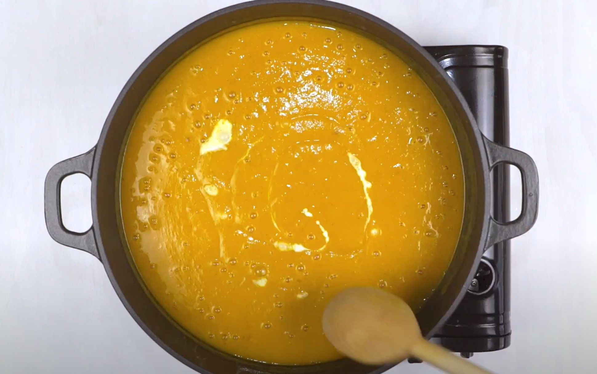

Pumpkin Soup Recipe

Description
The beauty of a creamy pumpkin soup (and this classic pumpkin soup recipe in particular) is that
it's so versatile and forgiving. It's one of the easiest meals to make with just a handful of ingredients,
and it's almost impossible to mess up.
Ingridients
- Pumpkin
- Onion
- Leek
- Cream
- Spices and seasongings
- Potato
- Stock
Steps
- Heat oil in a large saucepan over low heat,
add onion and leek and cook for 2-3 minutes,
until softened but not coloured.
- Add garlic, coriander, cumin, and nutmeg and cook,
stirring, for 30 seconds. Add pumpkin, potato and stock
and bring to the boil. Turn heat to low, cover and simmer for
30 minutes. Allow to cool slightly, then blend in batches.
- Return soup to pan, stir through cream and reheat gently. Season
and add a little more nutmeg if desired.